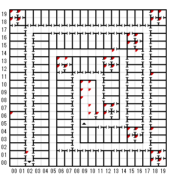

【 x：0，y：19 】
エンカウント
tower gurad
CLOAK（TWILIGHT CLOAK）
【 x：0，y：18 】
エンカウント
Privateの一団
【 x：0，y：6 】
ペンタグラム
【 x：1，y：19 】
エンカウント
【 x：1，y：18 】
エンカウント
【 x：2，y：1 】
地下霊園
ーー死者の蘇りしところ！
【 x：6，y：13 】
YOU ARE ABOUT TO BATTLE
TOWER GURDS
【 x：6，y：12 】
YOU ARE ABOUT TO BATTLE
TOWER SENTRIES
【 x：7，y：13 】
YOU ARE ABOUT TO BATTLE
【 x：7，y：12 】
YOU ARE ABOUT TO BATTLE
【 x：9，y：10 】
目の前の門こそ、まことの
地獄への門であった！
その炎の、悪魔のごとき輝きの
あまりの激しさに、君は目を
ふさぐばかりであった！
B)賄賂を出す、U)アイテムを使う
それとも（こいつはヒントだ！）R）逃げる！
→B)賄賂を出す、
地獄への門に向かって賄賂の品を
投げ込んだ途端、それはとけて、
蒸発してしまった。
→U)アイテムを使う
・DEMONIC CHIME
＊＊なにかメッセージ
【 x：9，y：9 】
地獄の落とし穴”アビス”だ！
KADORTOの神の慈悲あらんことを！
ここからさがるんだ！
【 x：9，y：8 】
熱さはしだいに耐えられないほどになってきた
前方の輝きは強烈なものであった。 どうすれば
このようなものが作り出せるというのだ？
巨大な像が、灼熱の大地から立ち上がり、君の
進路に立ちふさがった！
手遅れになる前にここから逃げろ！
探しますか
You are about to battle
SLAVERING DOG
倒すとDEMONIC CHIMES｜WIRED BONES
【 x：10，y：10 】
地獄の落とし穴”アビス”だ！
KADORTOの神の慈悲あらんことを！
ここからさがるんだ！
【 x：10，y：9 】
熱さはしだいに耐えられないほどになってきた
前方の輝きは強烈なものであった。 どうすれば
このようなものが作り出せるというのだ？
巨大な像が、灼熱の大地から立ち上がり、君の
進路に立ちふさがった！
手遅れになる前にここから逃げろ！
探しますか
You are about to battle
something cute
HELL PUPPY
【 x：10，y：7 】
マシュマロはちゃんと串に刺したかな？？
【 x：10，y：6 】
ダンテもかつてここにあり！
【 x：11，y：6 】
すべての望みを捨てよ！
（訪問者への伝統的な挨拶ってやつさ）
【 x：12，y：13 】
YOU ARE ABOUT TO BATTLE
TOWER SENTRIES
【 x：12，y：12 】
YOU ARE ABOUT TO BATTLE
【 x：12，y：7 】
YOU ARE ABOUT TO BATTLE
TOWER GURD
【 x：12，y：6 】
OFFICERS MESS
【 x：13，y：14 】
みつけた！秘密の通路だ！
カン高い死者のうめき声があたりに
渦巻き 床には、ここを通っていった
多くの者の足跡が残っている。
【 x：13，y：13 】
YOU ARE ABOUT TO BATTLE
TOWER GURDS
【 x：13，y：12 】
YOU ARE ABOUT TO BATTLE
OFFICERS MESS
【 x：13，y：7 】
YOU ARE ABOUT TO BATTLE
【 x：15，y：16 】
YOU ARE ABOUT TO BATTLE
【 x：15，y：15 】
YOU ARE ABOUT TO BATTLE
TOWER GURDS
【 x：15，y：4 】
YOU ARE ABOUT TO BATTLE
TOWER GURDS
【 x：15，y：3 】
YOU ARE ABOUT TO BATTLE
OFFICER MESS
【 x：16，y：16 】
YOU ARE ABOUT TO BATTLE
TOWER GURDS
【 x：16，y：15 】
YOU ARE ABOUT TO BATTLE
OFFICERS MESS
【 x：16，y：14 】
YOU ARE ABOUT TO BATTLE
【 x：16，y：4 】
YOU ARE ABOUT TO BATTLE
TOWER SENTRIES
【 x：16，y：3 】
YOU ARE ABOUT TO BATTLE
TOWER GURD
【 x：18，y：19 】
YOU ARE ABOUT TO BATTLE
TOWER SENTRIES
【 x：18，y：18 】
YOU ARE ABOUT TO BATTLE
TOWER GURDS
【 x：18，y：11 】
YOU ARE ABOUT TO BATTLE
TALON’S TIGER
【 x：18，y：4 】
YOU ARE ABOUT TO BATTLE
GHOST BUSTERS
【 x：18，y：1 】
towerなんとか
【 x：18，y：0 】
（アイテムがいっぱいの時）
おっとこれ以上は何も持てないぜ！
賢いプレイヤーってのは・・・
（空きがあるとき）
夕食も住み、部屋はもぬけのから、
机の上の箱の中には きらめく星のような
縞模様が入り、深夜の闇を思わせる 深い
青さをたたえた石が入っていた！
君はA STONEを手に入れた
（LANDER'S TURQ.）
【 x：19，y：19 】
YOU ARE ABOUT TO BATTLE
TOWER GURDS
【 x：19，y：18 】
YOU ARE ABOUT TO BATTLE
OFFICERS MESS
【 x：19，y：1 】
ＴＷＯＲナントカ
【 x：19，y：0 】
towerなんとか